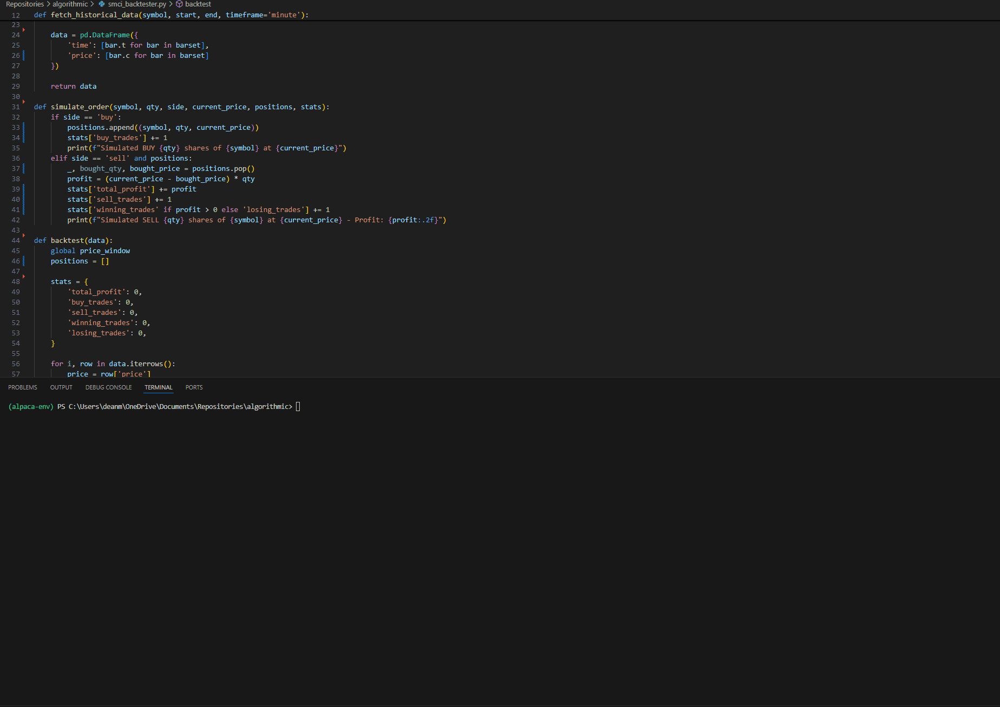
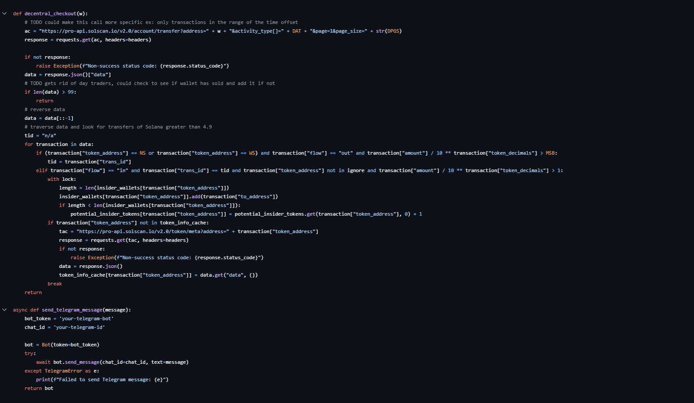
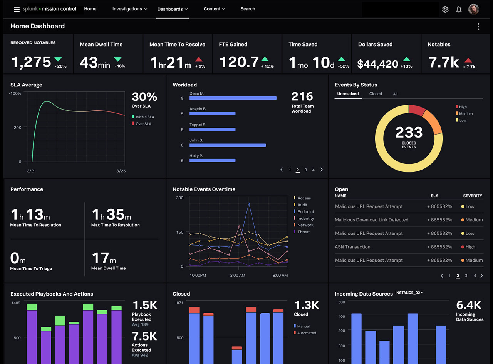
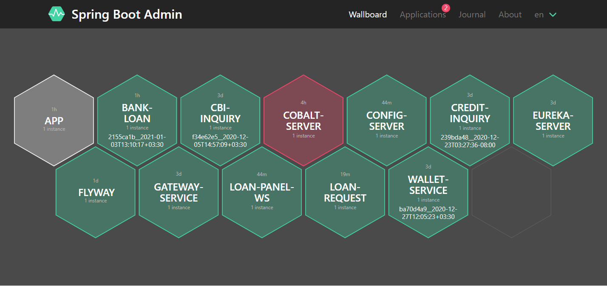

Portfolio
-
Optimized Precision Clicker

At Rose-Hulman, registration is very important. It is done by clicking a button right when the clock hits a certain time. The first people who click will get through first and register for the classes they want. That is why I made a precision clicker in an unspecified language which is extremely optimized and efficient. From testing, it will click with over 50 times as much precision as the best humans. It's safe to say I got the classes I wanted for next quarter!
-
Automated backtester and stock trader
Created a script to backtest and trade stock automatically over time
-
Automatized Cryptocurrency Tracking
Developed this script that uses the solscan.io API to scan transfers from popular exchanges and track what the reciever does with the recently transferred funds. It is optimized to find insiders who are buying coins early before they become popular. This script found RTR, DJT, and more tokens before they were at 2 million market cap. RTR went to 130 million and DJT went to over 400 million.
I have made it open source!
https://github.com/rhit-monroeds/SolProject/ -
Splunk Alerts
Created 22 Splunk alerts to monitor over 1 million logs per day to warn our team of issues in real-time
-
Spring Boot Admin Page
Created a Spring Boot Admin page to host apps, improve system reliability, and increase convenience